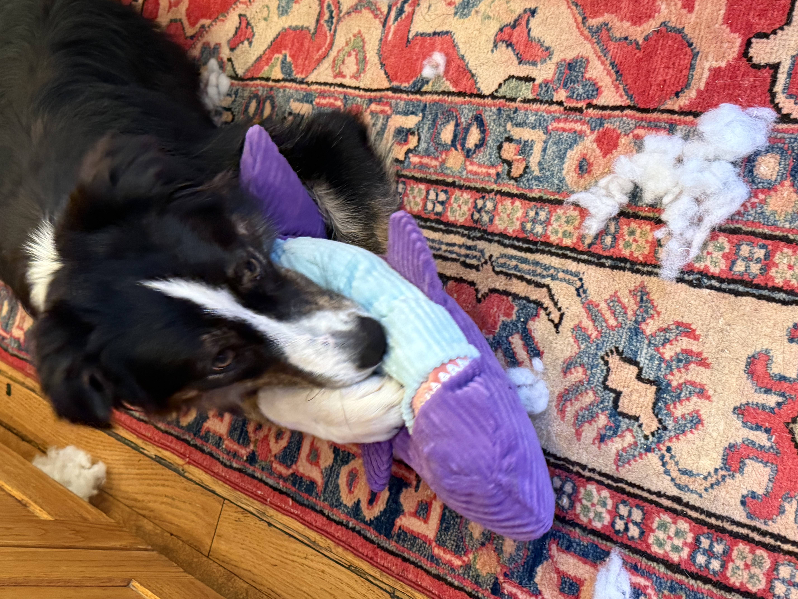
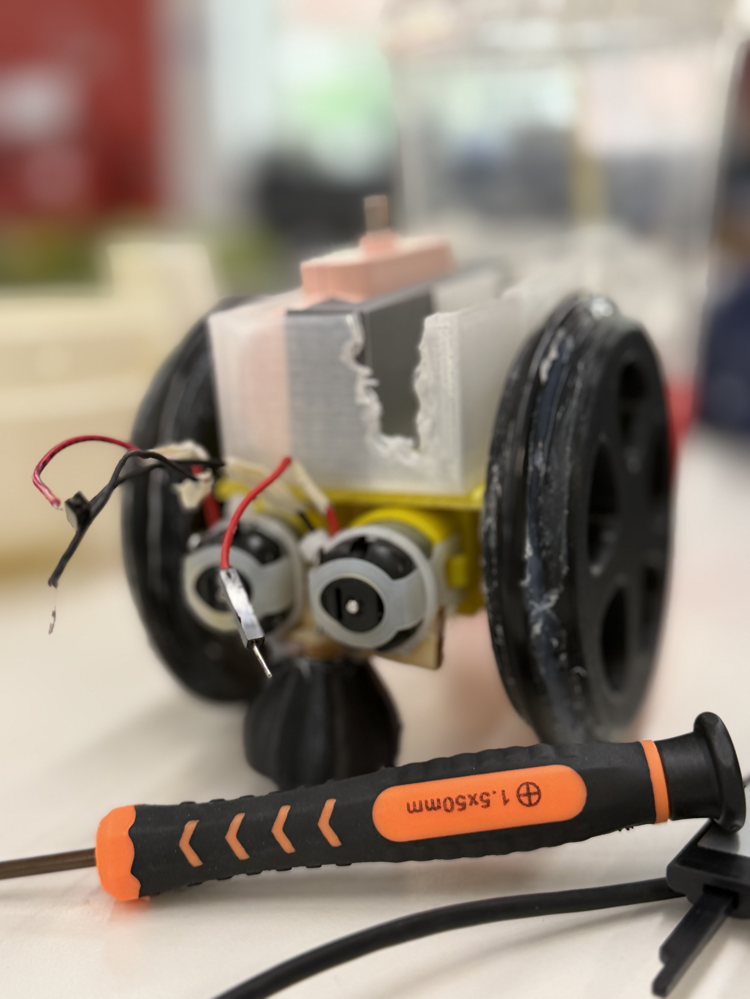
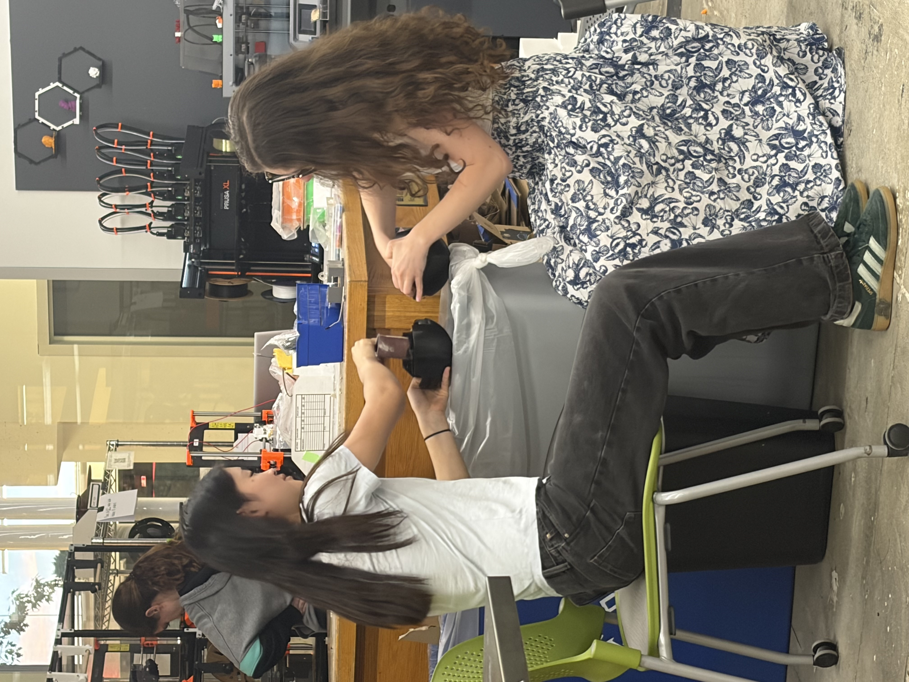
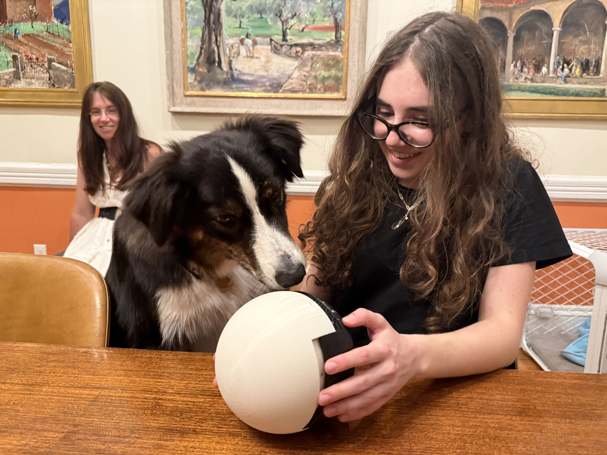
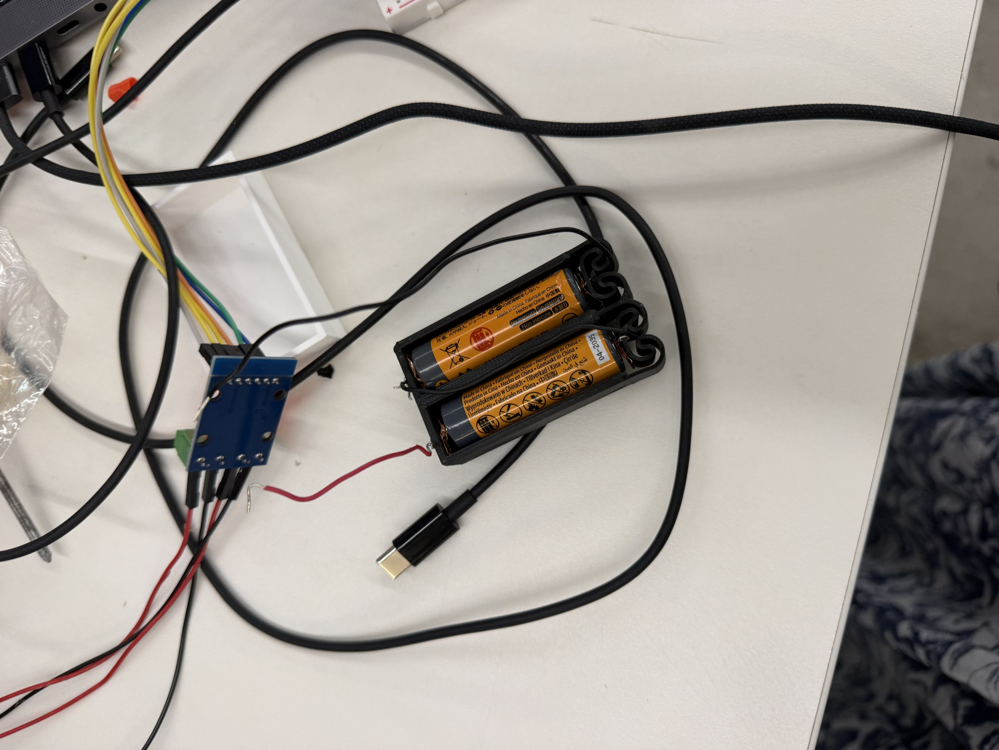
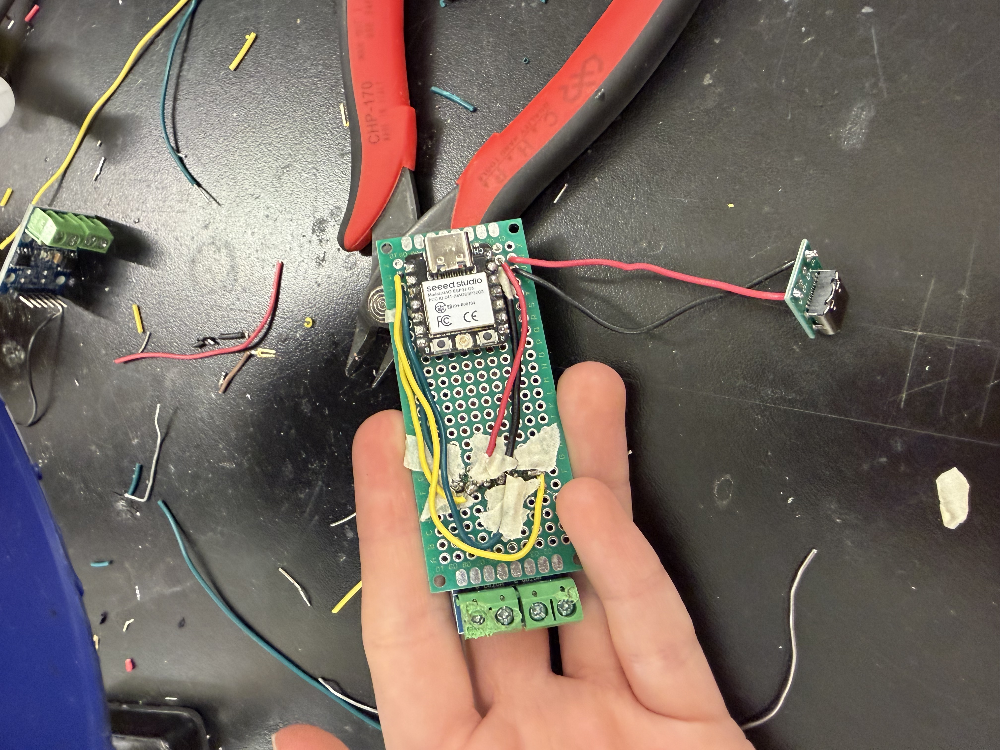
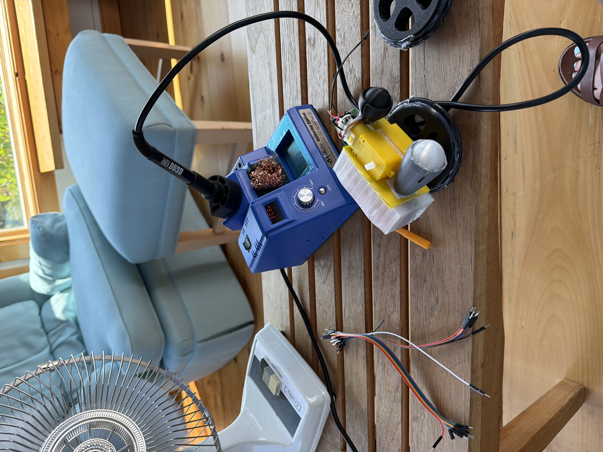

PS70 Final Project Documentation
Do you wish that at some point in the near future, you might (just maybe) have time to…do anything that isn't play with your border collie puppy? Like, not permanently. Just enough to say, take a nap. Or clean up his mess. Or cook dinner. Or leave the room. Or sit, quietly, hands free of toy and listening to the quiet.
If you couldn't tell, this is a little dream of mine, because I (shocker, I know) have a border collie puppy.

His name is Frankie, and he's adorable, sweet, and so so energetic. He requires approximately 300 more sheep than exist in Cambridge, Massachusetts, and, in lieu of them, needs to play 24/7.
What's my grand plan for a moment of rest? Introducing…the Distract-o-Matic 2000!
I wanted to create a self-propelling ball that would be able to roam through my kitchen and give him something else to do. Actually doing that came with several different iterations…
My initial plan was to shift the center of mass to move the ball. I mainly decided to do this because I thought writing the software would be fun, because I really like physics and thought the math would be fun to do. (Holding the center of mass constant relative to the ground seemed like a fun challenge, as did changing the acceleration and direction. Obviously, the smart thing to do would have been to just solve the problem and then do something that wasn't utterly inane.)

To change the center of mass, I planned to have X-Y-Z chambers, each with its own mass-moving pulley. My MVP was just to see if I could make one of the chambers. To do this, I 3d printed ends and a center moving piece, and hot glued metal rods in to act as guard rails. I didn't know we had the I hooked it up to a servo, which honestly, if attached better, probably would have worked — that said, due to being blind apparently, I didn't know that we had materials to make actual pulleys in the lab, and so the thick string and textured pipe made not the greatest of simple machine components.

After MVP presentations, Nathan suggested I think about how this would work as all six pulleys, and if I had other thoughts on how to make the ball move. After spending quite a while in Thought Experiment land, I realized that any plan using weight change would need at least 3 servos (maybe 2, if I could get a full arc motion thing working), and would weigh quite an awful lot. After a bit, I wound up going back to Nathan and asking what he thought I should do, and he recommended doing a differential drive. I listened.

The end project has a hamster-ball style propulsion mechanism. Making the drive was, theoretically, quite simple. In the end, it has two DC motors, glued together (with a spacer, obviously), with some 3d printed ball bearings and a brain. Attached are two wheels, with O-rings and hot glue added for friction (Nathan's idea, he had so many godsend solutions). The brain has an L9110 connected to a xiao and a 5V battery pack (D7-10 are attached to AIA-B1B, and they all share a power and ground). I did run into a few problems though, and, as such, my project is sitting sadly unworking. I've run through my bugs below
The ball itself didn't fit together on the first print I did (done in my father's 3d printer, so as to not monopolize a Prusa for hours and hours on end). The initial plan was to "just sand it down!"

I made my friend Emma help me, but we gave up on that plan pretty quickly. (Emma was such a blessing during this, major thanks. Remember that name, she'll come up again.) Eventually I decided to reprint. It still didn't work, and Nathan (yay Nathan!) suggested using a heat gun to fix the fit.

There are holes left for heat inserts, but I unfortunately forgot them, and so the ball does not roll perfectly.
They were needed. Twice. I also needed to laser cut out a holder for one of them, so it could snap into place on the end of the motor pair. The other wound up needing a reprint because I messed up the margins.
This nearly took me out.
This was the bane of my existence for several days on end. I first tried AA batteries

, which needed much resoldering (I'm not the best at soldering, this is a recurring theme, but also I was just convinced I’d done something wrong. Once they turned on a light, I started getting confused). It took me a while to realize that they were the reason my ball wasn't turning on, and, as I hadn't wanted to solder a protoboard before I had a working circuit, they were also the reason I didn't start working on the proto for quite some. I switched to a 5V battery pack, which came with it's own issues — mainly, that of needing a holder. I eventually (it took several iterations) came up with a design that fit the massive 5V and my protoboard

The Protoboard was an issue. I shouldn't have trusted myself to not mess it up, honestly, as the breadboard worked perfectly for a week. Version One made the TA Hannah look deeply concerned for a while (and, as it involved much masking tape, that's unsurprising). It worked for a few hours, before breaking on August 6th, but it was all I had (I hadn't been able to resolder a new one because, to save on space, I had to solder the xiao directly on.)
Luckily, after the fair, my friend Ethan was able to salvage the xiao, and I tried again. I started to resolder a new board, before letting Emma (who can solder better than I and who was bored) take over – which I am both very grateful for (as I hate soldering) but also regret (as she soldered a motor pin to the 3v3, resulting in a broken board). Afterwards, I fixed that, and took my soldering on the road to try and fix it

I'm still debugging though — one motor won't turn on, but the working motor changes, as does the pin, depending on what else is plugged in. Still, one motor does move sometimes!
Version Two will include:
Download Ball_code_testing.ino